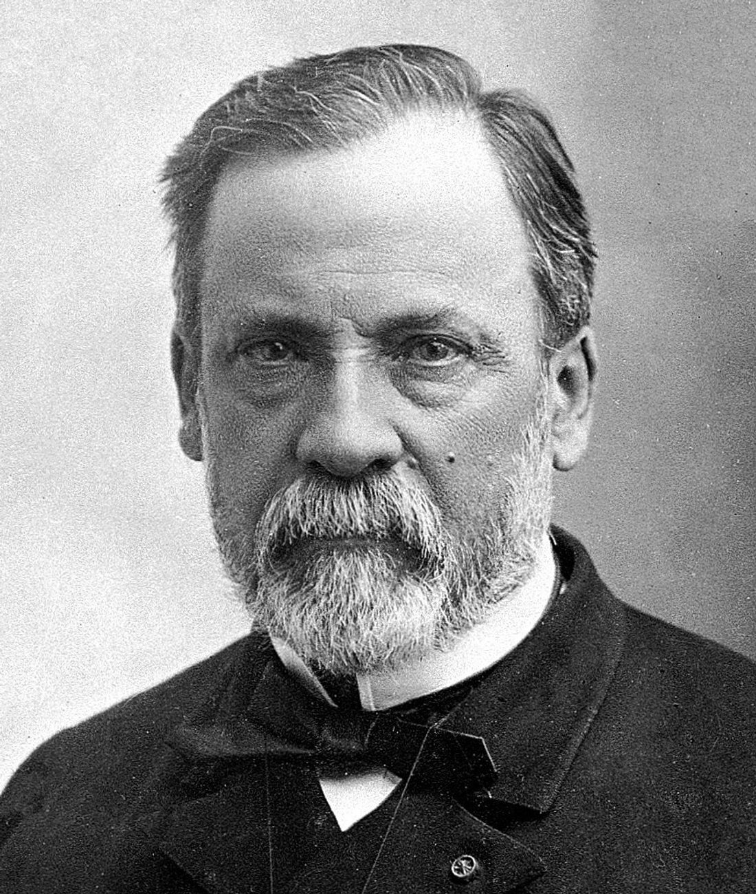
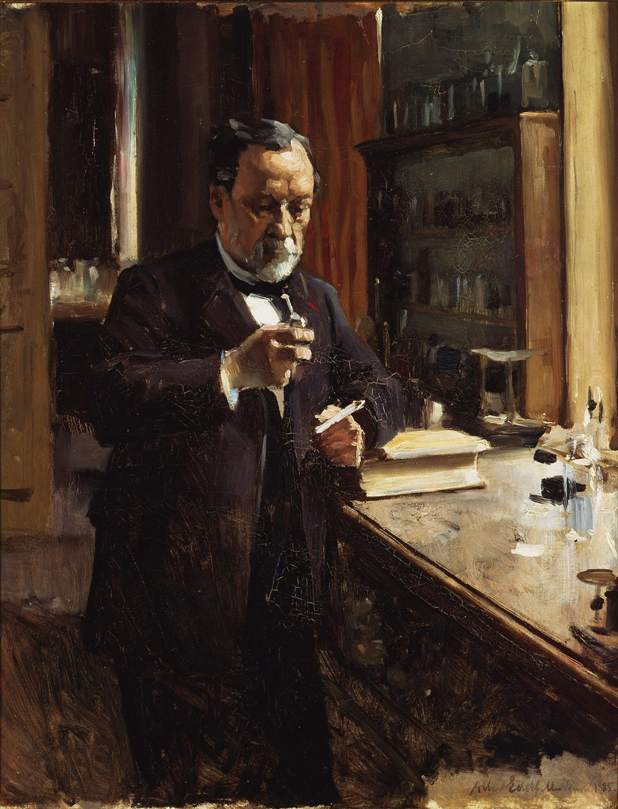
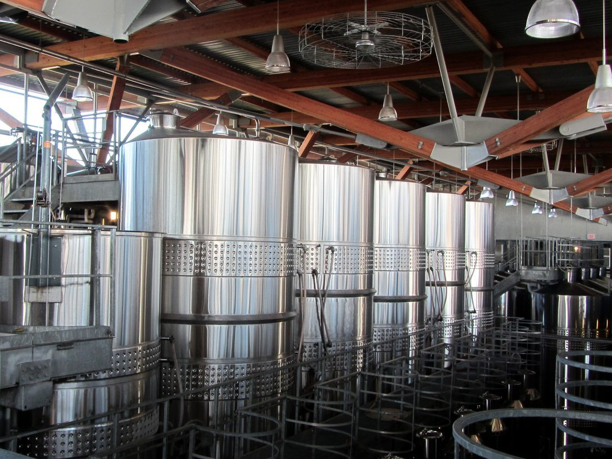
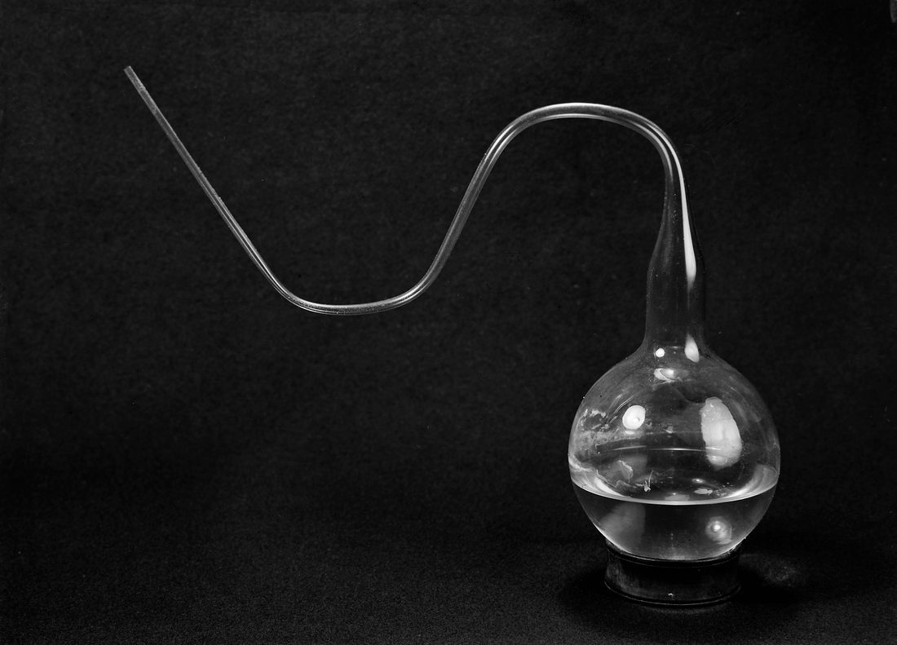
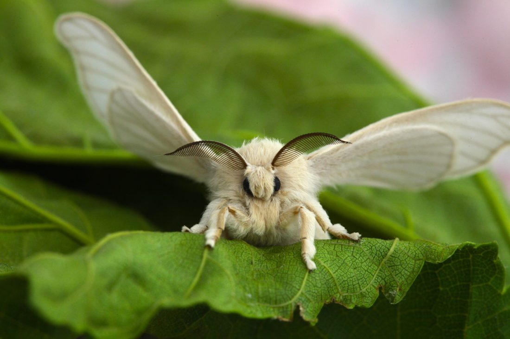
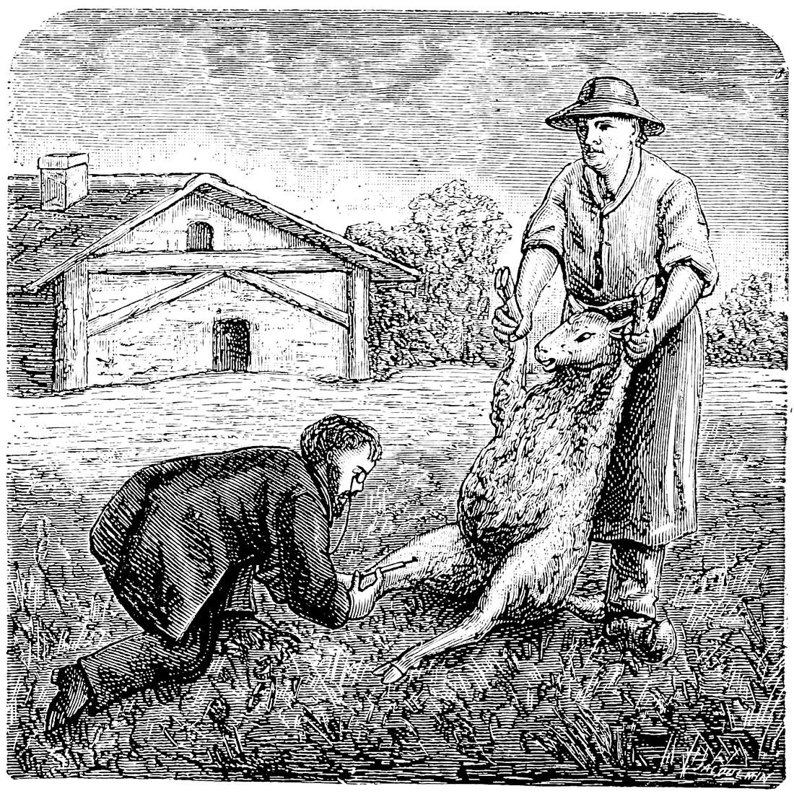
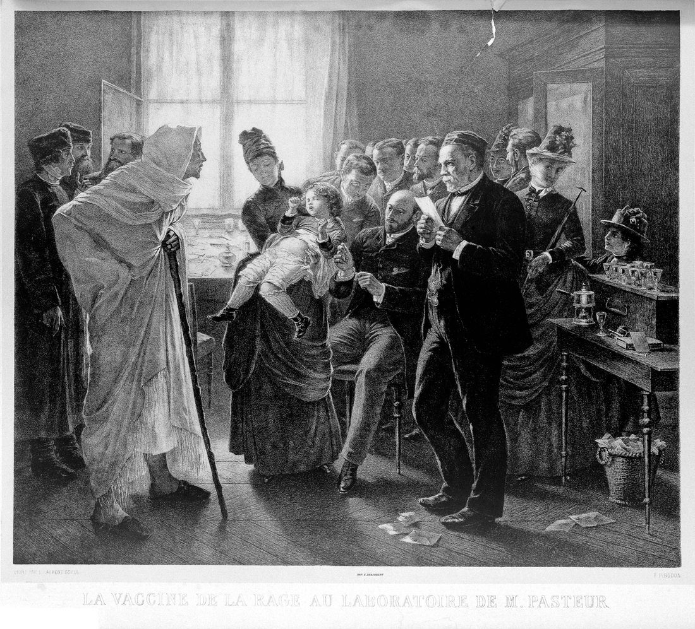
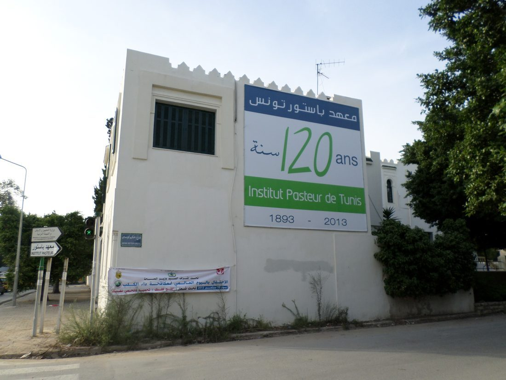
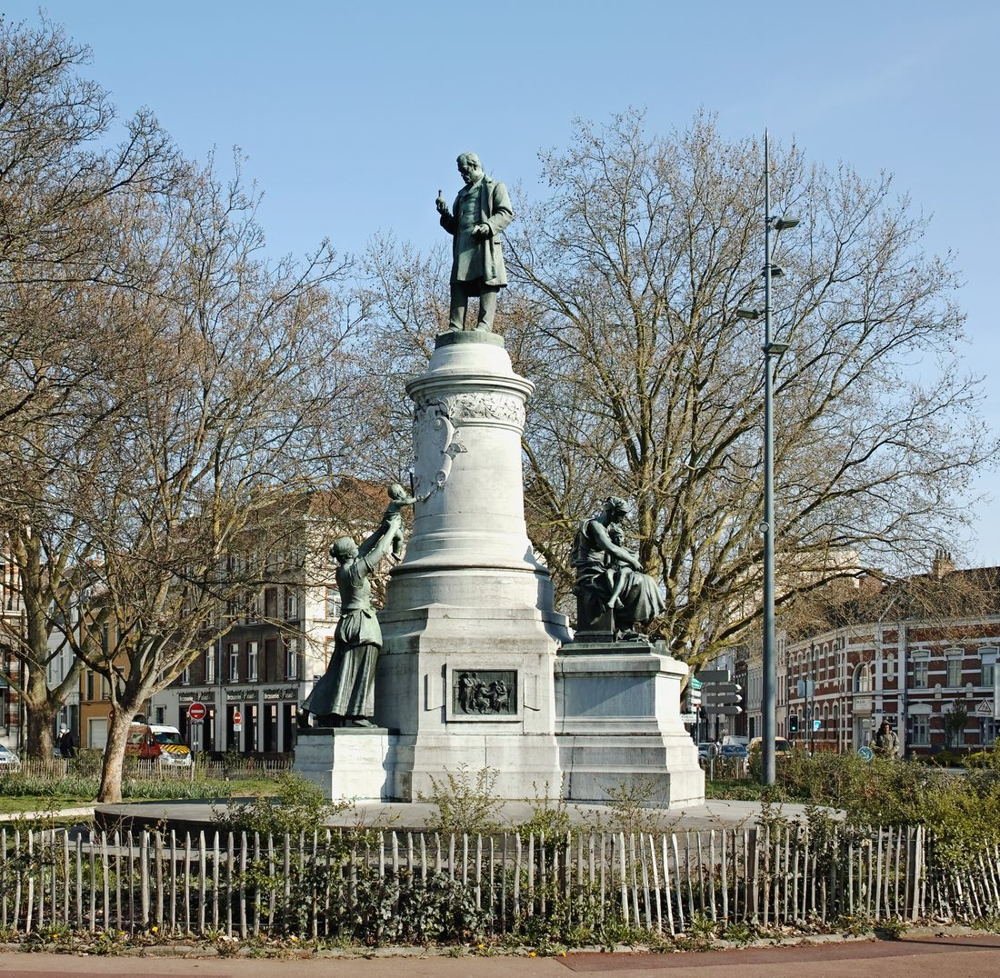

12 月 27 日，路易·巴斯德出生。早年资质平平，却以刻苦与好奇后来居上。

在巴黎高师接受训练，研究酒石酸晶体的不对称性，练就“看微观”的功夫。
他证明某些分子能让偏振光偏转方向不同，开启对分子空间结构的认识。

他证明乳酸发酵由微生物引起，把“化学现象”重新理解为“生命现象”。

用鹅颈瓶证明肉汤变质来自空气中的微生物，而非无中生有，力压自然发生说。

受政府之托研究蚕病，找出病原与检疫法，挽救法国丝绸产业。
中年中风导致左半身偏瘫，他仍以惊人毅力继续研究。

研究炭疽与鸡霍乱，摸索出“减毒”病原可诱发保护力，奠定疫苗原理。
公开演示：接种减毒菌的羊存活，未接种的死亡，震动学界与公众。

为被疯狗咬伤的少年梅斯特接种减毒疫苗，人类首次用疫苗对抗狂犬病。

以他的名字创立研究所，至今仍是传染病研究重镇。

9 月 28 日逝世，享年 72 岁。他让人类第一次系统地管住了“看不见的小东西”。